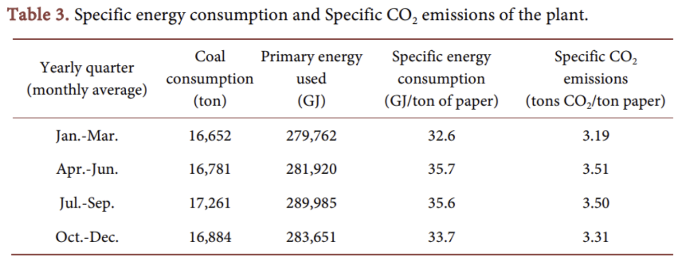

Excessive paper consumptionis depleting natural resources and driving up greenhouse gas emissions. The time to act is now. Every sheet saved makes a difference.

The excessive use of paper drives more production to meet demand in the Indian market. This releases large amounts of carbon dioxide, a common greenhouse gas, into the atmosphere. In 2019, the Indian pulp and paper sector contributed approximately 30.5 million tonnes of CO2 emissions, which was 1.09% of the country's total net greenhouse gas emissions in 2019. (The Energy and Resources Institute (TERI). “Virtual Roundtable on ‘Accelerating Net Zero Initiatives in Paper & Pulp Industry’.”). Additionally, the disposal of large amounts of paper into landfills also generates high amounts of methane, which is a greenhouse gas far stronger than carbon dioxide. The table on the right shows the high carbon emissions of paper production. It shows that a paper production factory in India emits 13.51 tonnes of CO2 per tonne of paper produced, a worrying figure.
The production of paper cuts down a large number of trees to harvest pulp, which is a key component in its production. In India, approximately 3106 kilotons of A4 paper sheets that are required in academic institutes across the country are produced. It is estimated that around 3.5 tons of wood, which is approximately 24.29 trees, is used to produce 1 ton of A4 paper sheets. Therefore, around 75.44 million trees are used every year to produce the paper that students use in academic institutions. (Verghese, Ashok, et al. “Environmental Impact of Paper Consumption in the Educational Sector and Digital Learning - Examination System Post Covid-19.”)
The production of one tonne of paper requires 40,000 litres of water (or 40 cubic metres of water) (IBEF. “Paper Industry Has Cut Water Usage by 80% and Is Investing US$ 3.05 Billion (Rs. 25,000 Crore) in Sustainable Processes: IPMA.”). This is a profound strain on water resources across India, depleting a resource that is necessary for all life in the country. Additionally, the paper that is disposed of in landfills can discharge pollutants into bodies of water such as iodine, chlorine, sulfur dioxide, etc. (Ecolonomics. “The Environmental Impacts of Using Paper.”). This further impedes access to water resources for humans and other living organisms.